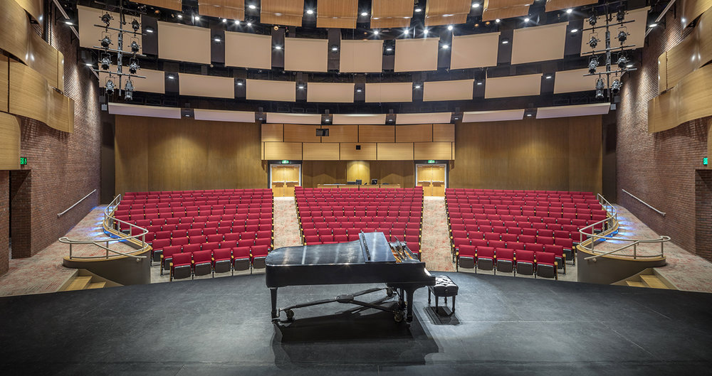
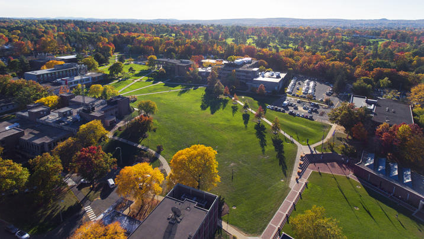

著名的哈特福特大学University of Hartford大学下属的哈特学院Hartt School 提供音乐，戏剧，和舞蹈所有的专业，通过哈特学院系统及专业的课程训练，学院的大多数毕业生成为了专业的音乐工作者，艺术家，音乐教育家，录音工程师，以及艺术管理者。
哈特学院专业课程包括大量的世界著名演奏家提供的大师课，著名艺术团体提供的艺术实践，训练，以及各种形式的实习，包括社会实践。每年学校有超过400场音乐会，哈特学院是全康乃狄克州最大的表演艺术学院。
哈特福特大学的主校区坐落于康涅狄格州中部的西哈特福市(West Hartford), 距离州府哈特福仅仅十几分钟车程。（Hartford）。建立于1854年的西哈特福市不仅仅是美，而且还是第一部字典的作者魏伯思特(Noah Webster)的出生地, 也是大文豪马克吐温的故乡。
西哈特福市是一个风景如画的小城市, 以其优美的环境和良好的学区常常被评为活泼中带宁静的居住首选。西哈特福气候四季分明。但由于有海岸的凉风吹拂，夏季时的温度较为适中。
哈特福特大学始建于 1877年，是一所私立综合性大学。于1957年由三所学校: Hartford Art School、Hiller College 和 Hartt School of Music 合并正式成立现在的哈特福大学。现有三个校区: 西哈特福、哈特福和Bloomfield。

该校现有学生超过 6，000人，教职人员大概有100多。近年以每年扩招约一千学生的速度扩建，也吸引了越来越多的国际学生学者来此求学、工作。在此就读的学生，可以在这 320 多英亩的校园里，尽情和愉悦的享受读书和作研究的乐趣，其中有现代化的教学设备、专业优良的教学师资，及图书馆内有超过 80 万册的藏书，提供了一个非常完善的学习环境。
如果您想更详细的了解哈特福特大学的专业老师介绍，
请点击这里
如果您想更详细的了解哈特福特大学的招生介绍以及学位设置，
请点击这里
网上申请表链接